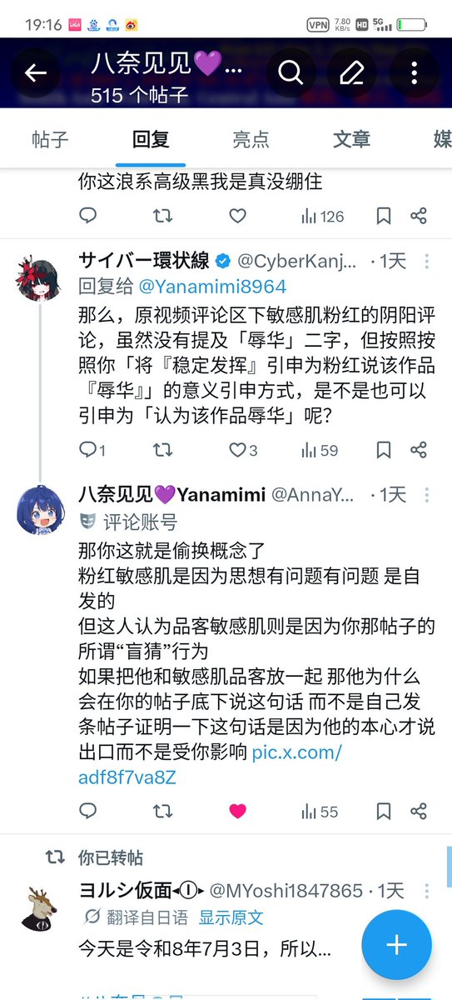

@ROCisChinaPart @hoshinofujivy 環状線提出的观点：一定有敏感肌粉红认为其「辱华」
事实：确实有粉红敏感肌言论出现。
環状線的观点确实有一定的偏差，但是偏差很大吗？更何况主观观点与客观事实的偏差是不可避免的。環状線的这一「偏差」真的会构成误导吗？
您不要揪着環状線的观点不放而忽略事实。

事实：确实有粉红敏感肌言论出现。
環状線的观点确实有一定的偏差，但是偏差很大吗？更何况主观观点与客观事实的偏差是不可避免的。環状線的这一「偏差」真的会构成误导吗？
您不要揪着環状線的观点不放而忽略事实。

@CyberKanjousen @hoshinofujivy 你原贴为什么不是断章取义 你就截了一张视频标题画面 但你的配文却用“盲猜”这类误导性词语
况且你误导的也不止我啊 就比如那天提出来的例子
他说品客正常发挥 请问他口中的正常发挥指的是什么 难不成是第二段粉红还看辉夜姬吗 这还不算误导这人认为真有品客认为辉夜姬辱华吗 https://t.co/FhzWrTW1vW
况且你误导的也不止我啊 就比如那天提出来的例子
他说品客正常发挥 请问他口中的正常发挥指的是什么 难不成是第二段粉红还看辉夜姬吗 这还不算误导这人认为真有品客认为辉夜姬辱华吗 https://t.co/FhzWrTW1vW